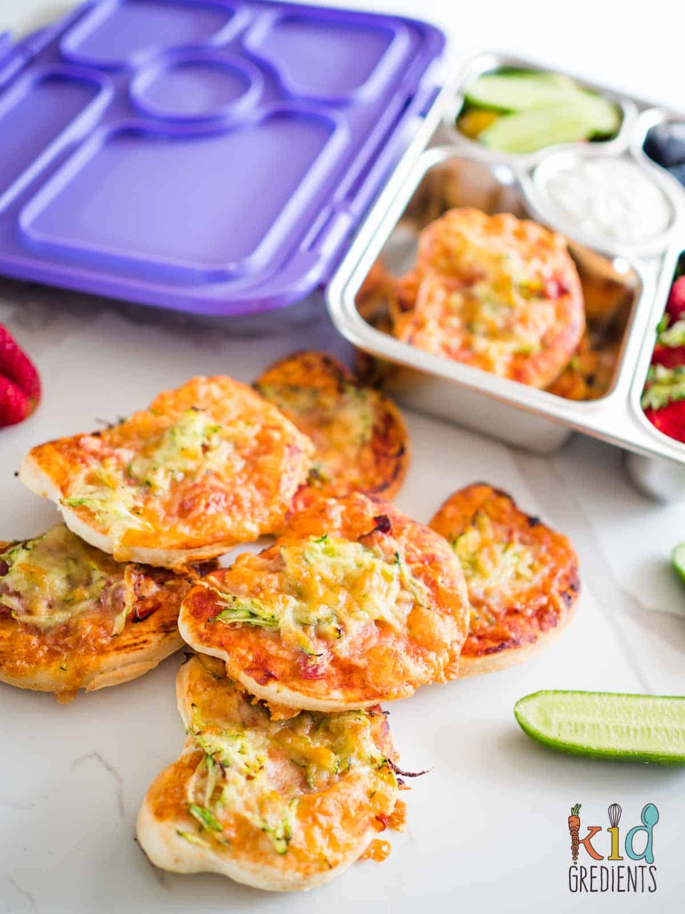

Home
Mini Pizzas

Lunchbox mini pizzas, quick and easy to make and freezable! Perfect for the lunch box or a snack at home for lunch.
Ingredients
- 1 cup greek yoghurt
- 2 cups self raising flour
- 2 tbsps tomato paste or leftover pasta sauce
- ½ zucchini finely grated
- 5 slices bresaola cut into slivers
- 1.5 cups grated cheese
Steps
- Preheat the oven to 200 degrees celsius. (392F)
- Combine the yoghurt and flour in the bowl of a mixer and mix until a dough forms. (You can also do this by hand for about 5 minutes)
- Tip onto a floured board and roll out (I rolled mine to 30 by 50 cms).
- Cut the shapes you want from the dough. Large cutters that are wide work best.
- Transfer onto a lined oven tray then top with tomato paste/ pasta sauce.
- Add the bresaola
- Next top with the zucchini.
- Cover with cheese.
- Re-roll the rest of the dough and make another lot!
- Bake for 12 minutes at 200 degrees celsius (392F).